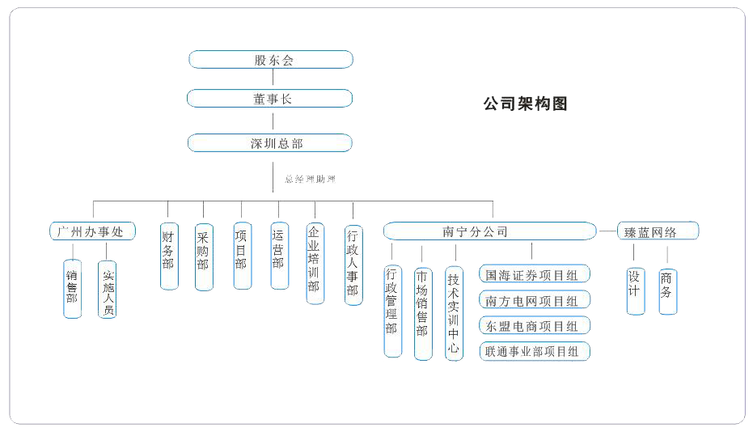

公司简介
深蓝软件成立于2002年，是以高端软件技术顾问服务及软件产品项目研发为主营业务的软件技术型企业，深蓝软件由具备丰富软件研发经验及系统软件理论知识的专业团队组成，具备丰富的行业经验及专业的软件研发及顾问咨询服务实力。
深蓝软件是国内率先面向行业及专业软件人员提供高端软件技术服务方案的专业机构，近几年主推Java/J2EE企业级应用架构技术，在数据仓库与数据挖掘、UML面向对象设计、Unix/Linux、高级数据库管理、微软技术架构、软件测试等高端软件技术上提供专业的服务方案，积累了丰富的经验，成功实施服务的企业客户多达上百家，遍及深圳、北京、广州、成都、天津、新疆、上海等全国各地及港澳地区。
面向软件行业培养高端软件工程师及提供软件人才外包服务是深蓝软件一大亮点，深蓝率先独家推出先培养工作后付费的高端软件工程师培养模式受到了行业的好评及尊重，近几年先后培养了五十多期专业软件工程师，为国内外输送了上千名高端软件工程师，同时与华为中兴等国内外知名软件企业建立了良好的战略合作关系，共同推动软件技术的应用。
深蓝软件以专业的开发设计技术积极研发自有知识产权的软件产品及项目，目前已经推出包括核心工作流程管理及公文文档管理的协同办公自动化系统dbOA，深蓝物流管理系统dbLS，深蓝dbERP＆CRM等具有竞争力的软件产品，并且已经成功实施应用于多家企业客户。
深蓝软件将一如既往致力于高端软件技术服务，为客户提供专业的高端软件技术方案，为软件行业输送专业的软件人才，为民族软件产业贡献一份力量。
公司架构
办公环境
公司纪事
2002年深圳！成立深圳市东方深蓝软件咨询有限公司！
2003年更名深圳市深蓝软件有限公司...
2008年南宁分公司成立...
2010年成立广州办事处...
2013年子公司南宁臻蓝网络科技有限公司成立
2015年南宁高校毕业生就业见习基地认定
企业文化
深蓝的远景目标：做中国最大，全球前五强电子商务公司
深蓝的使命：让工作变得简单、快乐
深蓝的价值观：客户为先、激情、学习、团队精神、追求超越
客户为先：客户利益第一、为客户着想、为客户多做事
激情：积极、主动、勤快、向上
学习：谦虚、好学、进步、用脑
团队精神：合作、诚信、步伐一致
追求超越：创新、竞争